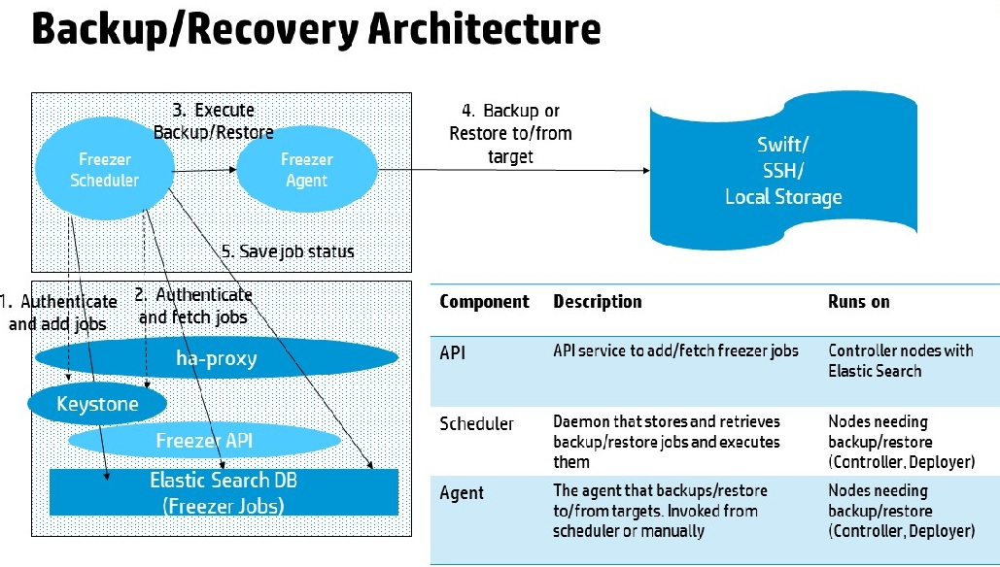

Freezer is a Backup and Restore as a Service platform that helps you automate the backup and restore process for your data. Freezer executes backups and restores as jobs, and executes these jobs independently and/or as managed sessions (multiple jobs in multiple machines sharing a state).
HPE Helion OpenStack® 2.0 supports backup and restore of control plane services. It comes with playbooks and procedures to recover the control plane from various disaster scenarios.
The following features are supported:
Freezer uses GNU Tar under the hood to execute incremental backup and restore. When a key is provided, it uses Open SSL to encrypt data (AES-256-CFB).
Freezer architecture consists of the following components:
| Component | Description |
|---|---|
| Freezer Scheduler | A client side component running on the node from where the data backup is
executed. It consists of a daemon that retrieves the data from the freezer API and
executes jobs (that is, backups, restore, admin actions, info actions, and pre-
and/or post- job scripts) by running the Freezer Agent. The metrics and exit codes
returned by the Freezer Agent are captured and sent to the Freezer API. The scheduler manages the execution and synchronization of multiple jobs executed on a single node or multiple nodes. The status of the execution of all the nodes is saved through the API. The Freezer scheduler takes care of uploading jobs to the API by reading job files on the file system. It also has its own configuration file where job sessions or other settings such as the Freezer API polling interval can be configured. |
| Freezer Agent | Multiprocessing Python software that runs at the client side where the data
backup is executed. It can be executed as a standalone or by the Freezer Scheduler.
The freezerc provides a flexible way to execute backup, restore, and perform other
actions on a running system. To provide flexibility in terms of data integrity, speed, performance, resources usage, and so on, the Freezer Agent offers a wide range of options to execute optimized backup according the available resources, such as:
|
| Freezer API | Stores and provides metadata to the Freezer Scheduler. Also stores session information for multi node backup synchronization. Workload data is not stored in the API . |
| DB Elasticsearch | API uses the backend to store and retrieve metrics metadata sessions information job status, and so on. |
